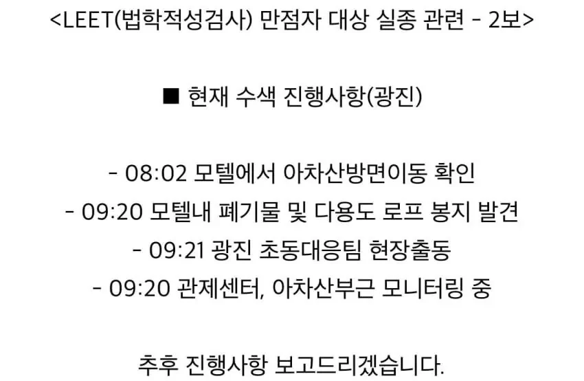
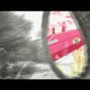
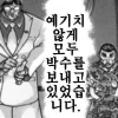

이세계로 리트라이

이세계로 리트라이
인생리트냥이 ㅋㅋㅋ
리트가 그 리트가 아니었네
내가 살자 할거면
로프 비닐 같은 흔적을
굳이 모텔에 안버릴 것 같근데
연막같음
나도 이렇게 생각했는데...

에에.. 리트와 나니?
그래서 도우미 여우 센코씨가 뭔데 이 십덕들아
숨기지 못하루자신의 잘못을 죽어서까지 숨기려한 이유가 뭘까.. 걍 사과하고 막노동하지
저정도 어그로끈 네임드면 분명 누가 써먹으려고 손 내밀었을거임. 근데 자기 에고가 너무 강해서 차마 광대가 되느니 인생 리세마라 하는게 낫다고 판단한거겠지
저거 웹툰 어떻게 됐냐 그러고보니
'그도 그럴게 이 웹툰, 대학교 겸임교수로써 진행한 사회실험이었답니다?'
라는 헛소리를 남기며 사라짐
리세냥이야?
시외버스에서 자지 꺼내놓고 흔들었을때 자살했어야 했는데 너무 늦게 했네
사람이 죽은걸로 조롱 좀 그만해라 일베충이냐

조롱당할 사람이 죽은거지 죽었다고 조롱하는게 아님
죽은 쪽이 일베충인데요...
어그로 점수 2/10
어째 어그로 끄는 실력이 더 떨어진 것 같냐 넌
그래도 결국 죽음으로 끝냈는데
굳이 저렇게 조롱까지 라는건 ㅂㅅ 같네
동정할 맘은 없는데 죽은 사람 가지고 저렇게 가지고 놀려는 심보가 뭔지 모르겠음.
뭐 죽으면 성역인거임? 전과 4범 범죄자 사기꾼 새끼 뒤진건데 좀 불쌍함?
ㄹㅇㅋㅋ
re:제로부터 시작하는 ai생활
센코씨는 어쩔 수 없긴해

자살방법으로 밧줄묶는거도 AI한테 물어봣나
저기서 말하는 폐기물은 뭘 순화한거임?
18년 수능수험표
천장에 로프 묶으려면 어디다 묶는거임?
LED등은 무게 못버틸거같은데
리트라이